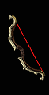
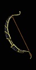

|

天擊
鋒銳之弓
Skystrike
Edge Bow
|
雙手傷害:
(17.5-21) - (50-60)
(變動) (平均傷害34)
等級需求: 28
力量需求: 25
需求敏捷: 43
武器基本速度: [5]
+150-200% 增強傷害
(變動)
增加 1-250 閃電傷害
打擊時2%機率發動等級6 隕石
30% 額外的攻擊準確率
+100 攻擊準確率
+1 亞馬遜技能等級
+10 精力
|
|

撕裂之鉤
剃刀之弓
Riphook
Razor Bow
|
雙手傷害:
(22-25) - (61-70)
(變動) (平均傷害44)
等級需求: 31
力量需求: 25
需求敏捷: 62
武器基本速度: [-10]
180-220% 增強傷害
(變動)
減慢目標速度 30%
30% 撕開傷口機率
30% 增加攻擊速度
7-10% 偷取生命
(變動)
+35 法力
|
|

社角久子
杉木弓
Kuko Shakaku
Cedar Bow
|
雙手傷害:
(25-28) - (72-81)
(變動) (平均傷害52)
等級需求: 33
力量需求: 53
敏捷需求: 49
武器基本速度: [0]
+150-180% 增強傷害
(變動)
發射爆炸箭
穿刺攻擊
增加 40-180 火焰傷害
+3 犧牲之箭 (限亞馬遜)
+3 弓與十字弓技能 (限亞馬遜)
|
|

無休止的冰雹
雙弓
Endlesshail
Double Bow
|
雙手傷害:
(30-35) - (72-83)
(變動) (平均傷害55)
等級需求: 36
力量需求: 58
敏捷需求: 73
武器基本速度: [-10]
+180-220% 增強傷害
(變動)
增加 15-30 冰冷傷害 - 凍結目標 3秒
冰冷抵抗 +35%
+50 對飛射性武器防禦
+40 法力
+3-5 砲轟 (限亞馬遜)
(變動)
|
|

狂野之弦
短攻城弓
Witchwild String
Short Siege Bow
|
雙手傷害:
(32-35) - (75-81)
(變動) (平均傷害55)
等級需求: 39
力量需求: 65
敏捷需求: 80
武器基本速度: [0]
+150-170% 增強傷害
(變動)
射出魔法箭矢
打擊時2%機率發動等級5 傷害加深
+1-99 % 致命攻擊 (依角色等級乘1)
所有抗性 +40
有凹槽(2)
|
|

岩壁殺手
長攻城弓
Cliffkiller
Large Siege Bow
|
雙手傷害:
(34-43) - (141-168)
(變動) (平均傷害96)
等級需求: 41
力量需求: 80
敏捷需求: 95
武器基本速度: [10]
+190-230% 增強傷害
(變動)
增加 (5-10)-(20-30) 傷害
(變動)
+2 亞馬遜技能等級
+80 對飛射性武器防禦
+50 生命
擊退
|
|

巫師之怒
符文之弓
Magewrath
Rune Bow
|
雙手傷害:
(55-60) - (127-137)
(變動) (平均傷害94)
等級需求: 43
力量需求: 73
敏捷需求: 103
武器基本速度: [0]
+120-150% 增強傷害
(變動)
增加 20-50 傷害
+200-250 攻擊準確率
(變動)
+1 亞馬遜技能等級
擊中使目標盲目
15% 偷取法力
法術傷害減少 9-13
(變動)
+10 敏捷
+3 導引箭 (限亞馬遜)
|
|

金擊圓弧
哥德弓
Goldstrike Arch
Gothic Bow
|
雙手傷害:
(30-35) - (150-175)
(變動) (平均傷害97)
等級需求: 46
力量需求: 95
敏捷需求: 118
武器基本速度: [10]
+200-250% 增強傷害
(變動)
+100-200% 對惡魔系怪物傷害
(變動)
+100-200% 對不死系生物傷害
(變動)
50% 增加攻擊速度
打擊時5%機率發動等級7天堂之拳
恢復生命 +12
+100-150% 額外的攻擊準確率加成
(變動) |